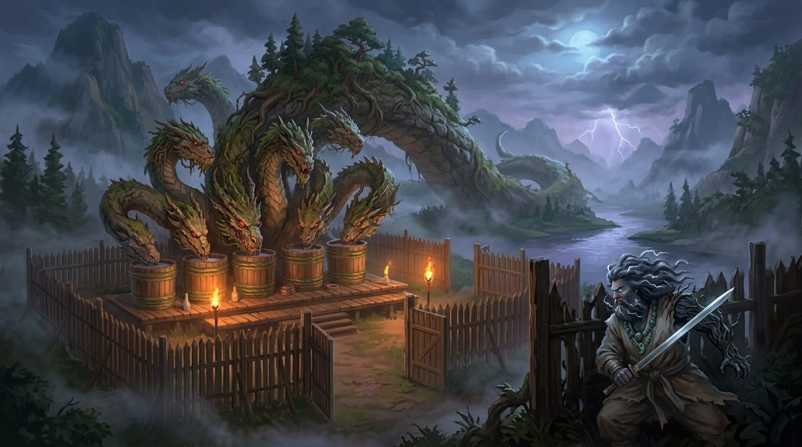
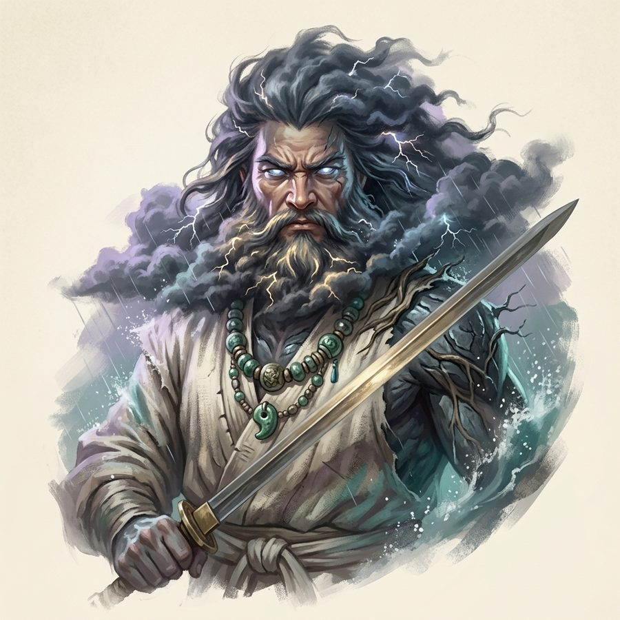
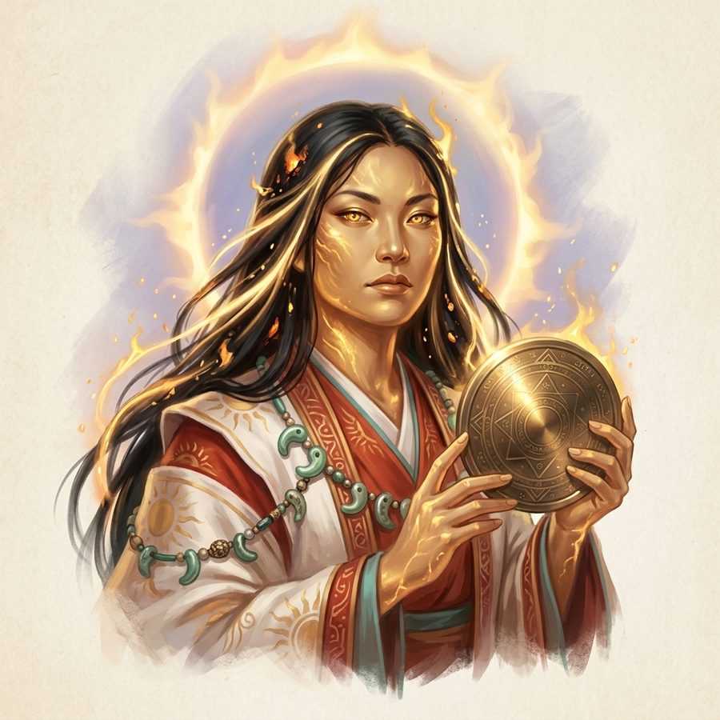
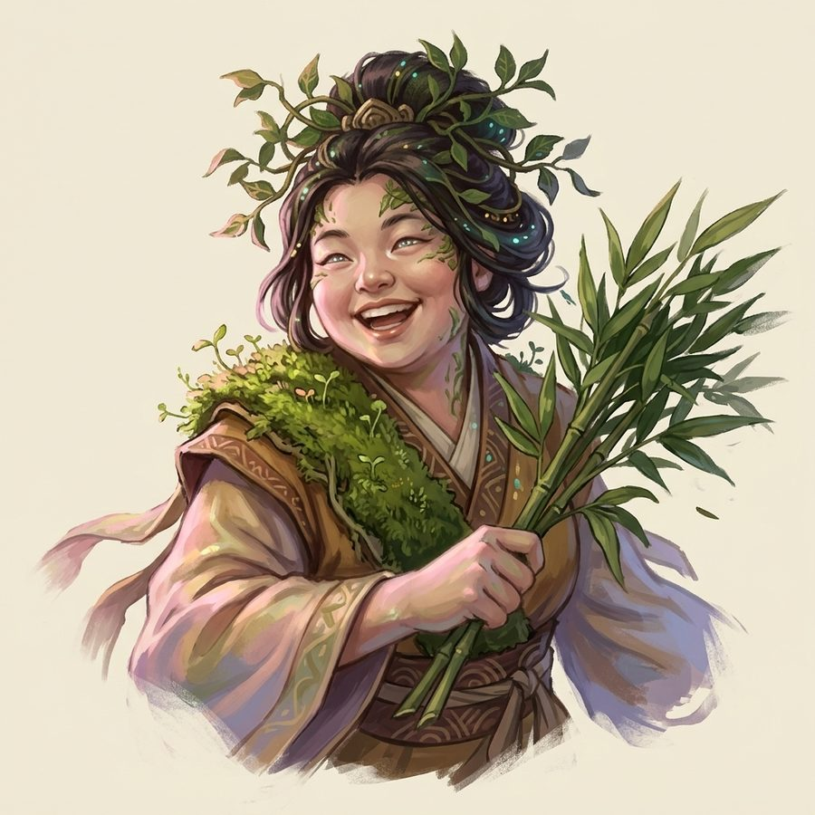
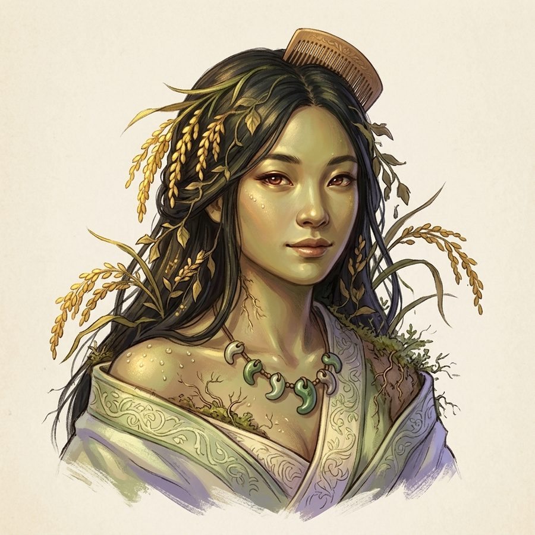
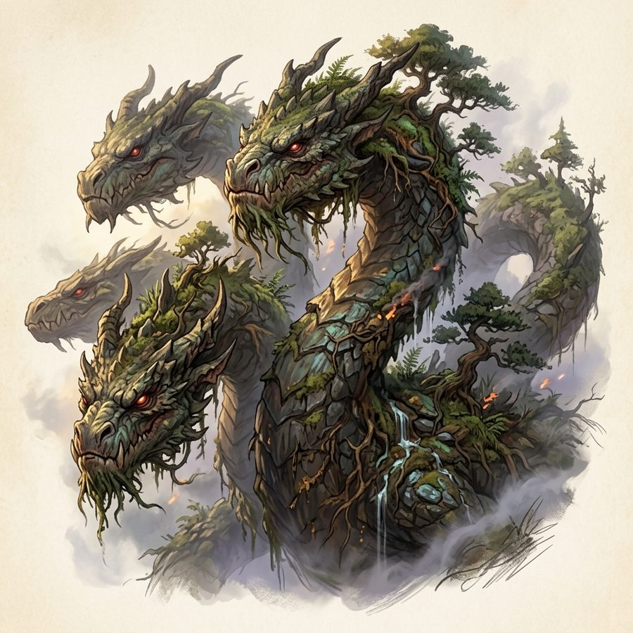

Japans · · 12 min lezen
Susanoo en de achtkoppige slang
Hoe de stormgod de zon verjoeg en een zwaard vond

In het begin, toen Japan nog maar net uit de zee was opgestegen, ging de god Izanagi naar de onderwereld om zijn overleden vrouw Izanami terug te halen. Het liep slecht af. Hij vluchtte terug naar het licht, en het eerste wat hij deed was zich wassen. Hij voelde zich vuil van alles wat hij beneden had gezien.
Hij ging naar de monding van een riviertje in het zuiden, op een vlakte vol bloeiende struikklaver, en hij legde zijn kleren af. Elk ding dat hij op de grond gooide werd een god: zijn staf, zijn gordel, zijn mantel, zijn hoed, zijn armbanden. Toen stapte hij het water in en waste zich. Uit het vuil dat hij afspoelde ontstonden goden van onheil, en daarna goden die het onheil weer rechtzetten. Uit het water zelf, boven, midden en onder, ontstonden de goden van de zee.
Als laatste waste Izanagi zijn gezicht.
Toen hij zijn linkeroog waste, ontstond Amaterasu, de godin van de zon. Uit zijn rechteroog ontstond Tsukuyomi, de god van de maan. En toen hij zijn neus waste, ontstond een derde: Susanoo. Zijn volledige naam betekent zoiets als 'de dappere, snelle, onstuimige man'.
Izanagi was dolblij. 'Ik heb kind na kind gekregen,' zei hij, 'en op het eind heb ik drie edele kinderen gekregen.' Hij deed zijn halsketting af en gaf die aan Amaterasu. 'Jij regeert over de Vlakte van de Hoge Hemel.' Tegen Tsukuyomi zei hij: 'Jij regeert over het rijk van de nacht.' En tegen Susanoo: 'Jij regeert over de zee.'
Een god die huilt
Amaterasu en Tsukuyomi gingen naar hun rijk. Susanoo niet.

Hij ging zitten en huilde. Hij huilde zo lang dat zijn baard, die acht handbreedtes lang was, tot op zijn borst groeide. En zijn huilen was geen gewoon huilen. Het was het huilen van een stormgod. De groene bergen verdorden ervan, en alle rivieren en zeeën droogden uit. Overal in de wereld kwamen boze geesten tevoorschijn, die zoemden als vliegen in de vijfde maand, en er kwam onheil over alles.
'Waarom regeer je niet over het land dat ik je gegeven heb?' vroeg Izanagi. 'Waarom zit je hier te huilen?'
'Ik huil omdat ik naar het land van mijn moeder wil,' zei Susanoo. 'Naar het verre land onder de aarde.'
Izanagi werd woedend. Hij had zelf gezien wat daar beneden was. 'Dan zul je ook niet in dit land wonen,' zei hij, en hij verbande zijn zoon.
Een bezoek aan de hemel
'Goed,' zei Susanoo. 'Maar eerst neem ik afscheid van mijn zus.'
Hij begon aan de klim naar de hemel. En omdat hij een stormgod was, schudden de bergen en de rivieren onder zijn voeten, en het hele land beefde.
Amaterasu hoorde hem aankomen en schrok. 'Mijn broer komt niet met goede bedoelingen,' dacht ze. 'Hij wil mijn land van me afpakken.'

Ze maakte haar haar los en draaide het opnieuw in, in twee knotten zoals mannen ze droegen. Ze hing een snoer van vijfhonderd edelstenen om, acht voet lang. Op haar rug bond ze een pijlkoker met duizend pijlen, en op haar zij een met vijfhonderd. Ze trok een leren armbeschermer aan, zette haar boog rechtop, en stampte zo hard op de grond dat haar benen tot haar dijen in de aarde zakten. Zo stond ze hem op te wachten, als een machtige krijger.
'Waarom kom je hierheen?' vroeg ze.
'Ik heb geen kwade bedoelingen,' zei Susanoo. 'Vader heeft me verbannen, en ik kwam alleen afscheid van je nemen.'
'Hoe weet ik dat je hart zuiver is?'
'Laten we een eed afleggen,' zei Susanoo, 'en kinderen voortbrengen. Dan zul je het zien.'
Ze gingen tegenover elkaar staan, aan weerszijden van de Kalme Rivier van de Hemel, die wij de Melkweg noemen. Amaterasu vroeg om het lange zwaard van haar broer. Ze brak het in drie stukken, spoelde ze in de heilige bron van de hemel, kauwde erop en blies een nevel uit. Uit die nevel ontstonden drie godinnen.
Toen vroeg Susanoo om de edelstenen uit het haar van zijn zus. Hij spoelde ze in dezelfde bron, kauwde erop en blies een nevel uit. Daaruit ontstonden vijf goden.
'De vijf jongens zijn uit mijn edelstenen ontstaan,' zei Amaterasu, 'dus ze zijn van mij. De drie meisjes zijn uit jouw zwaard ontstaan, dus die zijn van jou.'
De storm in het paleis
Susanoo vond dat hij gewonnen had. 'Mijn hart was zuiver,' zei hij, 'daarom heb ik lieve meisjes gekregen. Ik heb gewonnen.' En in zijn overwinningsroes ging hij helemaal los.
Hij brak de dijkjes tussen Amaterasu's rijstvelden af en gooide de greppels dicht. Hij bevuilde de zaal waar zij het grote oogstfeest hield, waar de eerste rijst van het jaar aan de goden werd aangeboden.
Amaterasu verdedigde hem nog. 'Dat vuil,' zei ze, 'heeft mijn broer vast uitgespuugd omdat hij te veel gedronken had. En die dijkjes heeft hij afgebroken omdat hij het zonde vond van de grond.' Ze wilde het goede in hem zien.
Maar Susanoo ging door. Amaterasu had een heilig weefhuis, waar zij en haar weefsters de kleren voor de goden weefden. Susanoo klom op het dak, brak een gat in de nok, en gooide daardoor een hemels paard naar binnen, gevlekt, dat hij van achteren naar voren had gevild.
De weefsters schrokken zo dat een van hen zich verwondde aan haar weefspoel. Ze stierf.
De grot
Dat was te veel. Amaterasu liep weg, naar de Hemelse Rotswoning, een grot in de hemel. Ze ging naar binnen en sloot de rotsdeur achter zich.
Op dat moment werd het donker. Niet alleen in de hemel, maar ook op aarde, in het Land van de Rietvlakten. Er was geen dag meer, alleen een eindeloze nacht. De stemmen van de boze goden zwollen aan als vliegen in de zomer, en er kwamen allerlei rampen.
De goden van de hemel, acht miljoen in getal, kwamen bij elkaar in de droge bedding van de Kalme Rivier van de Hemel. Ze wisten niet wat ze moesten doen. Ten slotte wendden ze zich tot Omoikane, de god van het denken. 'Bedenk jij iets.'
Omoikane dacht lang na. Toen gaf hij zijn opdrachten.
Eerst lieten ze hanen komen, 'de lang zingende vogels van de eeuwige nacht', en zetten die bij de grot. Ze lieten ze kraaien, alsof de ochtend kwam. Toen haalden ze ijzer uit de hemelse ijzerbergen en harde steen uit de rivier. Een smid ging aan het werk, en de godin Ishikoridome maakte een grote, ronde spiegel van glanzend metaal. Een andere god reeg een snoer van vijfhonderd edelstenen.
Ze trokken op de heilige berg van de hemel een sakaki-boom uit de grond, een heilige groenblijvende boom, met al zijn vijfhonderd takken. In de bovenste takken hingen ze het snoer van edelstenen. In de middelste takken hingen ze de spiegel. In de onderste hingen ze witte en blauwe offerdoeken. De god Futodama hield de boom vast. De god Ame-no-Koyane sprak plechtige gebeden uit. En de sterkste van alle goden, Ame-no-Tajikarao, 'de man met de sterke handen', ging verscholen naast de rotsdeur staan.
Toen kwam Ame-no-Uzume.
De dans

Uzume was de godin van de vreugde en de dageraad. Ze bond klimmos van de hemelse berg om zich heen als een sjerp. Ze zette een kroon van klimop op. Ze nam een bosje bamboebladeren in haar hand. Voor de rotsdeur legde ze een grote, holle houten plank op de grond, als een trommel, en daar klom ze op.
En ze begon te dansen.
Ze stampte op de plank tot die dreunde door de hele hemel. Ze danste steeds wilder, alsof er een god in haar gevaren was. Ze liet haar kleding afglijden, schudde haar borsten bloot en trok haar rok omlaag, tot ver onder haar navel.
De acht miljoen goden lagen in een deuk. Ze schaterden zo hard dat de Vlakte van de Hoge Hemel ervan schudde.
In de grot hoorde Amaterasu het gelach. Ze snapte er niets van. Het was donker, de wereld was in rouw, waarom lachte iedereen? Nieuwsgierig schoof ze de rotsdeur een klein stukje open.
'Ik dacht dat de Vlakte van de Hoge Hemel donker zou zijn nu ik me verstopt heb,' zei ze, 'en het Land van de Rietvlakten ook. Waarom maakt Uzume dan muziek, en waarom lachen alle goden?'
'We zijn blij,' zei Uzume, 'omdat er een godin is die nog stralender is dan u.'
Terwijl ze dat zei, hielden Ame-no-Koyane en Futodama de spiegel omhoog, recht voor de kier in de rotsdeur. Amaterasu zag een stralend licht. Ze wist niet dat het haar eigen spiegelbeeld was. Wie was die godin, die nog stralender was dan zij? Ze boog zich naar voren en stapte een stukje naar buiten om beter te kijken.
Op dat moment greep Tajikarao haar hand en trok haar de grot uit.
Futodama spande meteen een touw van rijststro achter haar langs, voor de ingang van de grot. 'Verder dan dit mag u niet meer naar binnen,' zei hij.
En het licht kwam terug, in de hemel en op aarde.
Dat touw van rijststro is de shimenawa. Tot op de dag van vandaag hangen zulke touwen bij Japanse heiligdommen, om een heilige plek af te bakenen. En de spiegel en het edelstenensnoer van die dag horen bij de heilige schatten van de Japanse keizers.
Verbannen
Toen kwamen de acht miljoen goden opnieuw bij elkaar, om over Susanoo te oordelen. Hij kreeg een boete van duizend tafels vol offergaven. Ze schoren zijn baard af en trokken de nagels van zijn vingers en tenen. En toen joegen ze hem de hemel uit.
Daar stond hij dan, een verbannen god, zonder baard, met lege handen. Hij had honger. Hij vroeg de voedselgodin, Ōgetsuhime, of ze hem iets te eten wilde geven. Ze haalde allerlei lekkernijen tevoorschijn, uit haar neus, uit haar mond en uit haar achterste, en maakte er een maaltijd van.
Susanoo zag het, en hij werd woedend. Ze gaf hem vuil te eten! Hij doodde haar ter plekke.
Maar uit haar lichaam groeide het voedsel van de mensen. Uit haar hoofd kwamen zijderupsen, uit haar ogen rijstzaad, uit haar oren gierst, uit haar neus kleine bonen, uit haar onderbuik gerst en uit haar achterste sojabonen. Een oude scheppergod verzamelde de zaden. Zo kwamen er gewassen op aarde, en was er voortaan te eten.
Eetstokjes in de rivier
Susanoo daalde af naar de aarde. Hij kwam terecht in Izumo, in het westen van Japan, bij de bovenloop van de rivier de Hi, op een plek die Torikami heet. Hij stond aan de oever en keek naar het water, en daar kwamen eetstokjes aandrijven.
Eetstokjes. Dus er woonden mensen, verderop stroomopwaarts. Susanoo ging op zoek.
Hij vond een klein huis, en daarbij een oude man en een oude vrouw die zaten te huilen. Tussen hen in zat een jong meisje.
'Wie zijn jullie?' vroeg Susanoo.
'Ik ben een god van deze aarde,' zei de oude man. 'Ik ben een kind van de grote berggod. Ik heet Ashinazuchi, en mijn vrouw heet Tenazuchi. En dit is onze dochter, Kushinadahime.'
Hun namen betekenen 'de oude die de voeten streelt' en 'de oude die de handen streelt'. Het waren ouders die hun kinderen hadden gekoesterd.

'Waarom huilen jullie?'
'We hadden acht dochters,' zei de oude man. 'Maar elk jaar komt de slang van Koshi, de achtkoppige slang, en eet er een op. Nu is het weer zover. Hij komt haar halen, onze laatste. Daarom huilen we.'
'Hoe ziet die slang eruit?'
'Zijn ogen zijn rood als de vruchten van de lampionplant. Hij heeft één lijf, met acht koppen en acht staarten. Op zijn lijf groeien mos en cipressen en ceders. Hij is zo lang dat hij acht dalen en acht heuvels bedekt. En zijn buik is altijd rood van het bloed, en ontstoken.'

Een plan met acht vaten
Susanoo keek naar het meisje. 'Wil je me je dochter geven?'
'Wij weten niet eens wie u bent,' zei de oude man voorzichtig.
'Ik ben de broer van de grote zonnegodin Amaterasu,' zei Susanoo. 'Ik ben net uit de hemel neergedaald.'
De ouders bogen diep. 'Als het zo is,' zeiden ze, 'met eerbied. Ze is van u.'
Susanoo veranderde Kushinadahime meteen in een fijntandige kam en stak die in zijn haarknot. Zo was ze veilig, wat er ook gebeurde.
Toen gaf hij zijn opdrachten. 'Brouw rijstwijn. Achtmaal gezuiverde rijstwijn, de sterkste die er is. Bouw een omheining, met acht poorten erin. Zet bij elke poort een platform, en op elk platform een vat. Giet de rijstwijn in de vaten. En dan wachten we.'
Ze deden precies wat hij zei. Het brouwen, het timmeren, het vullen. En toen wachtten ze.
De slang
Hij kwam, zoals de oude man gezegd had.
Het was als een berg die in beweging kwam: een lijf zo lang dat het over dalen en heuvels kroop, met bomen op zijn rug, en acht koppen met gloeiend rode ogen. De grond trilde ervan. Toen hij bij de omheining kwam, rook hij de rijstwijn. Hij stak zijn acht koppen door de acht poorten, in elk vat een kop, en begon te drinken.
Hij dronk en dronk. Achtmaal gezuiverde rijstwijn, acht vaten vol. Langzaam werden zijn bewegingen trager. Zijn koppen zakten. En ten slotte viel de slang, dronken, in een diepe slaap.
Toen trok Susanoo zijn lange zwaard, en hakte de slang in stukken.
Hij hakte en hakte. Het bloed stroomde de rivier in, tot de rivier de Hi zelf rood werd en verder stroomde als een rivier van bloed.
Toen hij in de middelste staart hakte, brak de snede van zijn zwaard. Susanoo vond dat vreemd. Wat zat daar in die staart, dat zelfs zijn zwaard erop afknapte? Hij sneed de staart open met de punt van zijn gebroken zwaard, en daarbinnen vond hij een groot, scherp zwaard.
Susanoo zag meteen dat het geen gewoon zwaard was. Hij stuurde het naar zijn zus Amaterasu, in de hemel. Het is het zwaard Kusanagi, 'de grasmaaier', en het is de derde van de drie heilige schatten van de keizers van Japan, naast de spiegel en de edelstenen uit de grot.
Acht wolken
Nu de slang dood was, zocht Susanoo een plek om te wonen, in het land Izumo. Hij kwam bij een plek die hem beviel. 'Nu ik hier ben,' zei hij, 'voelt mijn hart zuiver en fris.' Daarom heet die plek nog altijd Suga, 'verfrissend'. Daar bouwde hij een paleis, voor hemzelf en Kushinadahime.
Toen hij het paleis bouwde, stegen er wolken op uit de bergen. Susanoo keek ernaar, en hij maakte een lied. Volgens de overlevering is het het allereerste gedicht in de Japanse taal:
Acht wolken stijgen op. De achtvoudige omheining van Izumo maakt een achtvoudige omheining voor mijn vrouw en mij. O, die achtvoudige omheining.
Hij riep de oude Ashinazuchi bij zich en maakte hem hoofd van het paleis, en gaf hem een nieuwe, lange naam. Zo kwam de stormgod die de wereld had kapotgehuild en de zon de grot in had gejaagd tot rust, in een paleis tussen de wolken, met zijn vrouw die hij uit het haar had gehaald.
Of Susanoo daarmee helemaal tot rust kwam? Volgens de Kojiki ging hij uiteindelijk toch naar het land onder de aarde, naar zijn moeder, en werd hij heer van de onderwereld. Maar dat is een ander verhaal.
Achtergrond
Waar komt dit verhaal vandaan? Uit de Kojiki, het 'Verslag van oude zaken', het oudste boek van Japan. Het werd in 712 voltooid, in opdracht van het keizerlijk hof. Een man met een geweldig geheugen, Hieda no Are, droeg de oude verhalen voor, en de hoveling Ō no Yasumaro schreef ze op in Chinese tekens. Acht jaar later verscheen de Nihon Shoki, de 'Kronieken van Japan'. Daarin staan veel van dezelfde verhalen, vaak in meerdere versies naast elkaar. In de Nihon Shoki verwondt de weefgodin zich bijvoorbeeld aan haar spoel zonder te sterven, en komt het verhaal van de voedselgodin niet voor bij Susanoo, maar bij de maangod Tsukuyomi.
De drie schatten. De spiegel, het snoer van edelstenen en het zwaard Kusanagi zijn de drie heilige schatten van het Japanse keizerhuis. Volgens de traditie stamt de keizer via de kleinzoon van Amaterasu af van de zonnegodin zelf. Bij de troonsbestijging van een nieuwe keizer worden de schatten overgedragen, maar niemand mag ze zien. Volgens de traditie wordt het zwaard bewaard in de Atsuta-schrijn bij Nagoya en de spiegel in de grote schrijn van Ise.
Een echt landschap. Izumo bestaat nog: het ligt in de prefectuur Shimane, aan de Japanse Zee. De rivier de Hi heet nu de Hii, en er staat een schrijn van Suga, die beweert de plek te zijn van Susanoo's paleis. Sommige onderzoekers zien in de slang de rivier zelf, die in het voorjaar buiten zijn oevers trad, en in het rode bloed het ijzerzand van de streek, waar al eeuwen ijzer gewonnen werd.
Een god met twee gezichten. Susanoo is geen held en geen schurk. Hij vernielt, maar hij redt ook. Hij brengt rampen, maar uit wat hij aanricht ontstaan ook rijst, de zon die terugkomt en een gedicht. In het shintoïsme worden zulke kanten van een god naast elkaar vereerd. Susanoo wordt nog altijd aanbeden, onder meer in de grote Yasaka-schrijn in Kyoto, waar elke zomer het beroemde Gion-feest voor hem wordt gehouden.
Bronnen
- Kojiki, vertaling Basil Hall Chamberlain (1882), via Wikisource), secties 10-19, van de reiniging van Izanagi tot het paleis in Suga
- Susanoo-no-Mikoto, Wikipedia, over de verschillen met de Nihon Shoki
- Amano-Iwato en Yamata no Orochi, Wikipedia